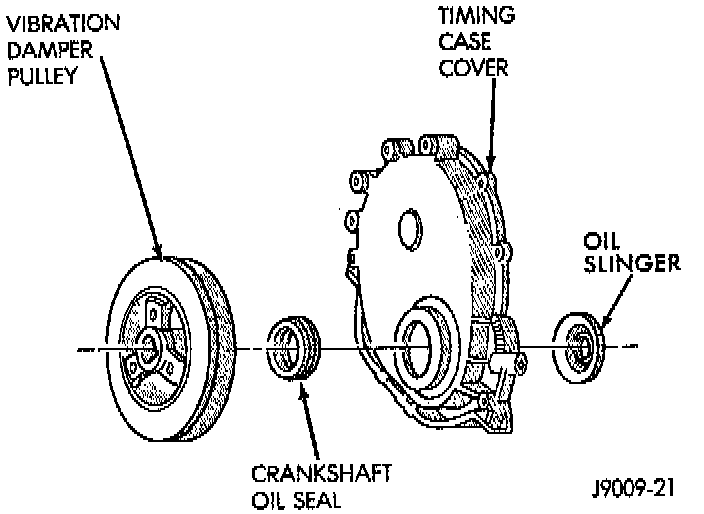

Installation
1. Inspect the cam lobes for wear.2. Inspect the bearing journals for uneven wear pattern or finish.
3. Inspect the bearings for wear.
4. Inspect the distributor drive gear for wear.
5. If the camshaft appears to have been rubbing against the timing case cover, examine the oil pressure relief holes in the rear cam journal. The oil pressure relief holes must be free of debris.
6. Lubricate the camshaft with Mopar Engine Oil Supplement, or equivalent.

7. Carefully install the camshaft to prevent damage to the camshaft bearings.
8. Install the timing chain, crankshaft sprocket and camshaft sprocket with the timing marks aligned.
9. Install the camshaft sprocket retaining preload bolt. Tighten the bolt to 108 Nm (80 ft. lbs.) torque.
10. Lubricate the tension spring, the thrust pin and the pin bore in the preload bolt with Mopar Engine Oil Supplement, or equivalent. Install the spring and thrust pin in the preload bolt head.

11. Install the timing case cover with a replacement oil seal.
12. Install the vibration damper.
13. Install the hydraulic valve tappets.
14. Install the cylinder head gasket with the numbers facing up.
15. Install the cylinder head and head bolts.
16. Install the push rods.
17. Install the rocker arms and pivot and bridge assemblies. Tighten each of the capscrews for each bridge alternately, one turn at a time, to avoid damaging the bridge.
18. Install the engine cylinder head cover.
19. Position the oil pump gear.
20. Install the distributor and ignition wires. Refer to Powertrain Management.
21. Install the serpentine drive belt and tighten to the specified tension.
NOTE: During installation, lubricate the hydraulic valve tappets and all valve components with Mopar Engine Oil Supplement, or equivalent. The Mopar Engine Oil Supplement, or equivalent must remain with the engine oil for at least 1609 km (1,000 miles). The oil supplement need not be drained until the next scheduled oil change.
22. Install the A/C condenser and receiver/drier assembly, if equipped. Refer to Heating and Air Conditioning.
CAUTION: Both service valves must be opened before the air conditioning system is operated.
23. Install the radiator, connect the hoses and fill the cooling system to the specified level. Refer to Cooling System.
24. Check the ignition timing and adjust as necessary.
25. Install the grille and bumper, if removed.
26. Connect negative cable to battery.